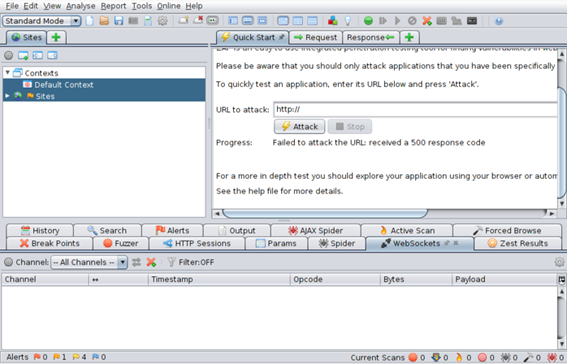

UD 2: Determinación del nivel de seguridad requerido por las aplicaciones
B.- Práctica
Una empresa de la ciudad ha experimentado un aumento de pedidos en su tienda web y ha decidido evaluar el nivel de seguridad de su aplicación web.
La empresa de desarrollo de software que realiza el análisis no posee experiencia en en verificación de aplicaciones web y tras investigar los estándares de verificación opta por OWASP, sus herramietnas y la guía de testeo para aplicaciones web, https://owasp.org/www-project-web-security-testing-guide/
Manejo de Web Security Testing Guide
Enunciado
Para familiarizarse con la guía se analizan una serie de test de forma que sirvan de ejemplo para los o las testeadoras.
Los Test son los siguientes:
- WSTG-INFO-08. Huella del framework.
- WSTG-IDNT-01. Definición de roles.
- WSTG-INPV-02, Almacenamiento de XSS.
- WSTG-INPV-12. Inyección de comandos.
- WSTG-CLNT-02. Ejecución de Javascript.
Se pide para cada test (CEd):
- Resumen del tipo de problema.
- Objetivo del test.
- Ejemplo de test. Tipo de pruebas, herramientas…
Buscar los requerimientos asociados a los casos de prueba anteriores e indicar los niveles de verificación para los que se definen. (CEa)
¿Qué tipo de nivel ha de cumplir la aplicación Juice Shop según el estándar ASVS? (CEb).
¿De la clasificación anterior, que requerimientos se incluirían en aplicaciones de nivel 2? Indicar al menos 3 aplicaciones de dicho nivel. (CEc).
Se tiene una aplicación web bancaria. ¿Que nivel a de cumplir? Listar los requerimientos que ha de cumplir del capítulo XX?
Ejemplo el test WSTG-INPV-04. Polución de parámetros HTTP (HPP).
Problema
Reside en el envío al servidor de una petición HTTP con varios parámetros con el mismo nombre, esto hace que el servidor pueda comportarse de forma imprevista, y dependiendo de este comportamiento del servidor un atacante puede:
- Evitar la validación de entrada.
- Provocar fallos en la aplicación.
- Modificar valores internos del servidor.
- Conocer detalles del servidor
Objetivo del test
Identificar el back-end (tecnología de servidor)
Descubrir los puntos de inyección e intentar pasar los filtros de entrada usando la polución de parámetros de entrada.
Ejemplo del test
Este test se puede realizar realizando una petición directamente contra el servidor sin necesidad de un cliente, por ejemplo utilizando el programa Postman, utilizado para testear servicios web, pero que permite crear peticiones HTTP de forma personalizada, además de poder analizar también la respuesta HTTP.
En el cliente se puede forzar en envío de parámetros duplicados colocando en las entradas el carácter separador de parámetros.
Se recomienda el uso de ZAP para el análisis de vulnerabilidades.
Análisis de un sitio web con ZAP
Indicaciones
El testeo de aplicaciones web puede convertirse en una tarea tediosa y costosa en tiempo si se realiza de forma manual, existen diferentes aplicaciones y framework que permiten evaluar aplicaciones de forma automatizada, una de ellas es Metasploit, con versiones gratuitas o ZAP de la propia organización OWASP.
En este caso se evalúa el nivel de seguridad con Zen Attack Proxy (ZAP), ir a la web https://owasp.org/www-project-zap/, descargar la aplicación e instalarla.

A continuación configurar el navegador para que el servidor ZAP se utilice como proxy de forma que todas las peticiones HTTP pasen por el mismo, la dirección es localhost:8080.
El Instituto Nacional de Ciberseguridad de España (INCIBE) posee un seminario del uso de ZAP en la siguiente dirección:
https://www.youtube.com/watch?v=1InikJ74654
ASVS de Juice Shop con ZAP:
A partir del vídeo de INCIBE(CEd):
- Realizando un análisis automatizado,
- Buscar url ocultas con el sitio de navegación predeterminada.
- Encontrar las direcciones de correo de los administradores.(CEd)
- A partir del vídeo que se facilita y utilizando el ataque Fuzzy realizar un SQL Injection para entrar sin usuario validado.(CEd)
- Generar un informe de los resultados, estableciendo si la aplicación es o no segura.(CEb)
- Clasificar los bugs detectados en el Top Ten 10 para páginas web. (CEd)
Certificando los resultados.
Utilizando la aplicación web OWASP Application Security Verification Standard (ASVS) Web App, buscar los test asociados a las pruebas evaluadas con ZAP y marcar los resultado obtenidos. (CEc)
Genera un informe del grado de cumplimiento de ASVS.(CEc)